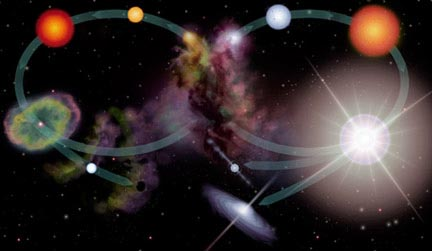

A star's life cycle is determined by its mass. The larger its mass, the shorter its life cycle. A star's mass is determined by the amount of matter that is available in its nebula, the giant cloud of gas and dust from which it was born. Over time, the hydrogen gas in the nebula is pulled together by gravity and it begins to spin. As the gas spins faster, it heats up and becomes as a protostar. Eventually the temperature reaches 15,000,000 degrees and nuclear fusion occurs in the cloud's core. The cloud begins to glow brightly, contracts a little, and becomes stable. It is now a main sequence star and will remain in this stage, shining for millions to billions of years to come. This is the stage our Sun is at right now.
As the main sequence star glows, hydrogen in its core is converted into helium by nuclear fusion. When the hydrogen supply in the core begins to run out, and the star is no longer generating heat by nuclear fusion, the core becomes unstable and contracts. The outer shell of the star, which is still mostly hydrogen, starts to expand. As it expands, it cools and glows red. The star has now reached the red giant phase.
It is red because it is cooler than it was in the main sequence star stage and it is a giant because the outer shell has expanded outward. In the core of the red giant, helium fuses into carbon. All stars evolve the same way up to the red giant phase. The amount of mass a star has determines which of the following life cycle paths it will take from there.
From Red Giant to Supernova: The Evolutionary Path of High Mass Stars
Once stars that are 5 times or more massive than our Sun reach the red giant phase, their core temperature increases as carbon atoms are formed from the fusion of helium atoms. Gravity continues to pull carbon atoms together as the temperature increases and additional fusion processes proceed, forming oxygen, nitrogen, and eventually iron.
When the core contains essentially just iron, fusion in the core ceases. This is because iron is the most compact and stable of all the elements. It takes more energy to break up the iron nucleus than that of any other element. Creating heavier elements through fusing of iron thus requires an input of energy rather than the release of energy. Since energy is no longer being radiated from the core, in less than a second, the star begins the final phase of gravitational collapse. The core temperature rises to over 100 billion degrees as the iron atoms are crushed together. The repulsive force between the nuclei overcomes the force of gravity, and the core recoils out from the heart of the star in a shock wave, which we see as a supernova explosion.